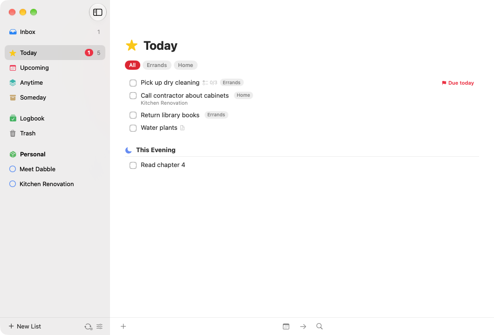
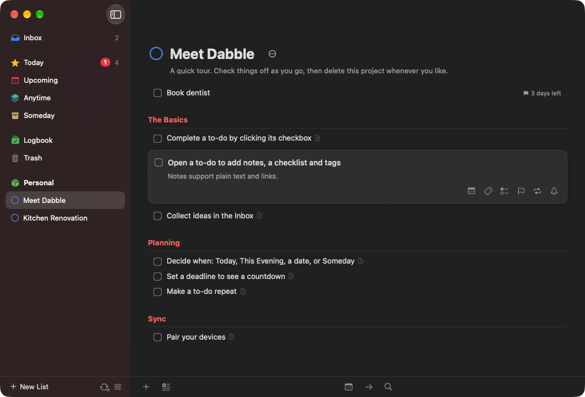

Today & This Evening
One list for what you'll do today, with a separate section for tonight. Due and scheduled items show up on their own.
A beautiful, open-source to-do app.
Your devices sync with each other. No server, no account. Plan your day on the Mac, check things off on your iPhone, and keep it all in step over your own network.
Free and MIT licensed · macOS 15 or later · also as a .dmg · first launch tips




Dabble follows the shape of Things: a calm place for today, a clear view of what's coming, and projects that show you how far you've come.
One list for what you'll do today, with a separate section for tonight. Due and scheduled items show up on their own.
See the days and weeks ahead at a glance, including the next instance of every repeating to-do.
Everything you could do now lives in Anytime. Maybes and big ideas wait in Someday until you're ready.
Write "tomorrow", "fri", "next week", "in 3 days" or "Dec 25" into When and Dabble understands.
Give a to-do a due date and get a countdown, "2 days left", so nothing sneaks up on you.
Pick a time and get a notification on that device, scheduled locally. No push server involved.
Repeat on a schedule (every Monday, the 1st of the month) or a set time after you complete it.
Get it out of your head now and sort it later. Anything without a place lands here.
Break big goals into steps, group them under headings, and watch the progress pie fill up.
Keep the parts of your life apart: Work, Home, Health. Areas hold projects and loose to-dos.
Every to-do has room for notes and a checklist of small steps you can tick off one by one.
Nested tags that projects and areas pass down to their to-dos. Filter any list by tag in a click.
Completed to-dos move to the Logbook so you can look back. Deleted ones wait in the Trash.
Press a global hotkey from any app on your Mac and jot a to-do down without switching windows.
Jump to any list, project, tag or to-do by typing a few letters.
On iPhone and iPad, tap the plus to add a to-do, or drag it to drop one exactly where you want.
Automate with dabble:///add, add-project, show and search, the way things:/// works.
On the Mac you can plan, schedule, tag and complete without touching the mouse.
On iPhone, swipe a to-do to schedule it, move it, or delete it.
Reorder to-dos, move them between lists, or drop them onto Today.
Select a handful of to-dos and schedule, tag, move or complete them all at once.
Completed the wrong thing? Deleted a project? Undo puts it back.
Export everything to a JSON file and import it anywhere. Your data is never locked in.
Follows your system appearance on Mac, iPhone and iPad.
Most to-do apps keep your list on a company's server. Dabble keeps it on your devices and moves changes directly between them, encrypted, over your own network.
Pick your other device, check that both show the same six digits, and tap Codes Match on each. Now they share a secret sync key. That key is the only "account" there is.
Devices discover each other on your Wi‑Fi, or over Apple's peer-to-peer Wi‑Fi when there's no router at all. Away from home? Add an address over a VPN like Tailscale, or run your own encrypted sync server.
Every connection starts with a fresh key exchange mixed with your sync key, then everything is encrypted. Devices without the key can't connect or read a thing.
Devices ask each other for "everything since last time", so syncs are tiny. Changes hop along too: iPad → Mac → iPhone, even if the iPad and iPhone never meet.
Each field of a to-do carries a timestamp. Rename it on your Mac and set a deadline on your iPhone, and you keep both. All devices settle on the same result.
Good to know: devices sync while Dabble is open on both of them. iOS doesn't let apps keep a network connection in the background, so open Dabble on your iPhone and it catches up in a second or two.
Free, open source and built from the code you can read on GitHub.
Requires macOS 15 Sequoia or later. Unzip, then drag Dabble into Applications.
First launch$ xattr -dr com.apple.quarantine /Applications/Dabble.appOpen Dabble.xcodeproj in Xcode 26 or later, pick the DabbleMac scheme and press Run. Every release also lists SHA-256 checksums in SHA256SUMS.txt. Details are in the README.
Requires iOS or iPadOS 18 or later. Dabble isn't on the App Store, so pick one of two ways in:
Option 1 · Build with Xcode$ git clone https://github.com/nearbycoder/dabble.git
$ open dabble/Dabble.xcodeprojDabble-iOS-unsigned.ipa from the latest release.Apps signed with a free Apple ID stop opening after 7 days. Re-run from Xcode, or let AltStore refresh it. Your data stays put either way.
The shortcuts follow the conventions you may already know from Things.
| New to-do | ⌘N |
| New to-do below selection | Space |
| New project | ⌥⌘N |
| New heading | ⇧⌘N |
| Quick Entry, from any app | ⌃Space |
| Quick Find | ⌘F or just start typing |
| Undo / Redo | ⌘Z · ⇧⌘Z |
| Open / edit | Return |
| Complete | ⌘K |
| When… | ⌘S |
| Start Today / This Evening | ⌘T · ⌘E |
| Anytime / Someday | ⌘R · ⌘O |
| Deadline | ⇧⌘D |
| Tags | ⇧⌘T |
| Move to… | ⇧⌘M |
| Move up / down | ⌥⌘↑ · ⌥⌘↓ |
| Extend selection | ⇧↑ · ⇧↓ |
| Move to Trash | ⌫ |
| Inbox | ⌘1 |
| Today | ⌘2 |
| Upcoming | ⌘3 |
| Anytime | ⌘4 |
| Someday | ⌘5 |
| Logbook | ⌘6 |
| Settings | ⌘, |
Not unless you want one. There is no Dabble-run server, no account and no sign-up. Your to-dos live in a file on each of your devices, and devices send changes straight to each other. If this website disappeared tomorrow, your copy of Dabble would keep working and syncing.
If your devices are rarely in the same place, you can run your own tiny sync server. It's one file, or one Docker container, and it only ever stores encrypted data.
Everything keeps working. Add, edit and complete to-dos as usual. The next time two of your devices can see each other with Dabble open, they swap what changed and merge it.
Edits don't clash: each field (title, notes, when, deadline, tags…) is merged on its own, so changes to different fields are all kept. If the same field was edited on two devices, the most recent edit wins. Repeating to-dos completed on two offline devices still produce just one next instance.
Yes, two ways. Run your own sync server: start the relay from the repo's server/ folder (node server.mjs or docker compose up) behind HTTPS, then enter its address under Settings → Sync → Sync Server on each device. It only stores end-to-end encrypted data, and changes arrive within a second or two.
Or use a VPN: install one such as Tailscale, then add the other device's address, for example my-mac.tailnet.ts.net:52384. Dabble listens on port 52384 by default. We don't recommend opening that port on your router to the whole internet.
To add a device that's never near your others, copy the sync key from one that's set up and paste it into Join with Sync Key.
On the wire, always. Every connection uses a fresh X25519 key exchange combined with your 256-bit sync key, and every message is sealed with ChaCha20-Poly1305. Devices that don't have your sync key can't connect, read or tamper with anything.
On disk, your data is a JSON file in Dabble's sandboxed app container, protected by your device's own encryption (FileVault on the Mac, Data Protection on iPhone and iPad). See SECURITY.md for the full threat model.
On a device that's already set up, open Settings → Sync and choose Pair New Device. On the new device, choose Join Another Device and pick the first one from the list. Both devices then show the same 6-digit code. Check that it matches and tap Codes Match on each. You can pair as many devices as you like, from any device already in the group.
Comparing the codes is what keeps pairing safe. There's no password to guess, and someone trying to sit in the middle would show you different codes. Details.
Not yet. It's on the roadmap. You can move your data between Dabble installs with the JSON backup export and import, and the dabble:/// URL scheme makes it easy to script adding to-dos and projects.
Dabble is a community project with no company behind it to pay for and run a developer account. You can build it yourself in a few minutes or sideload the release build. See iPhone & iPad.
Nothing. Dabble is free and open source under the MIT License. Contributions are welcome on GitHub.